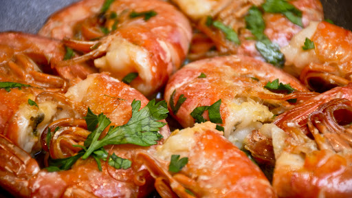

Story Of
DRestourant

DRestourant merupakan suatu website restourant yang membantu admin atau kasir yang memperlihatkan menu makanan dan membuat bill pesanan secara online. Sebelumnya DRestourant merupakan awal dari nama DCafe yaitu berawal dari cafe kecil yang dibuat oleh oleh Dimasqi. Dengan majunya perkembangan jaman, akhirnya DCafe berubah menjadi DRestourant, dan DRestourant membuat Website yang menarik, yang dimana digunakan untuk memajukan penjualan DRestourant.